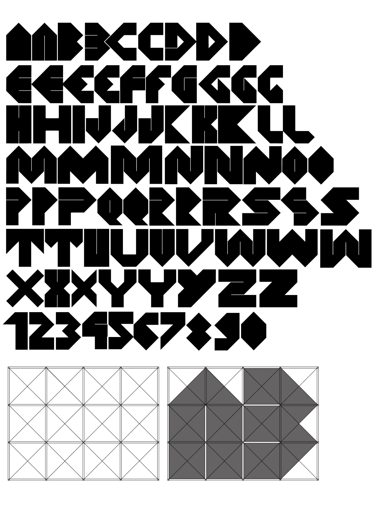

SENS est une typographie utilisant le symbole de la flèche en tant que formes et contreformes de ses caractères. Chaque caractère comprend plusieurs variations. Elle s'inspire de l'architecture brutaliste des années 60.